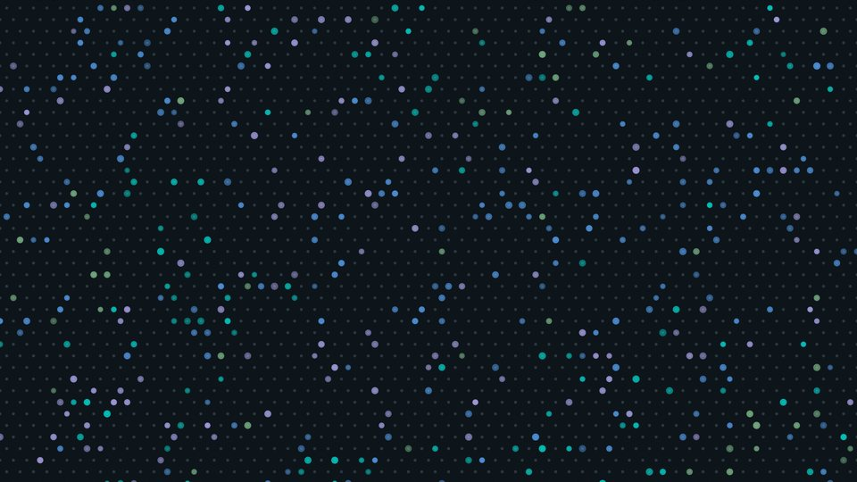
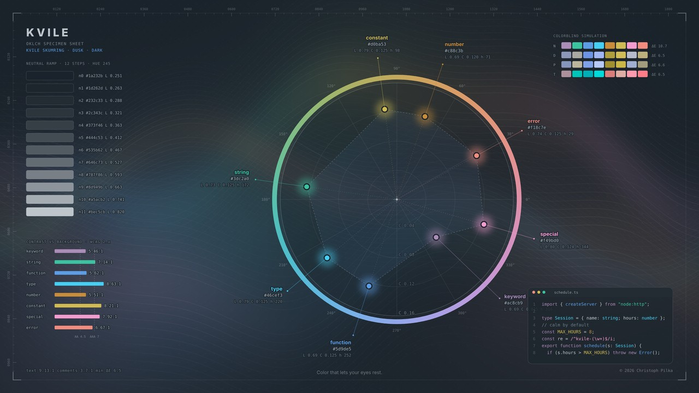
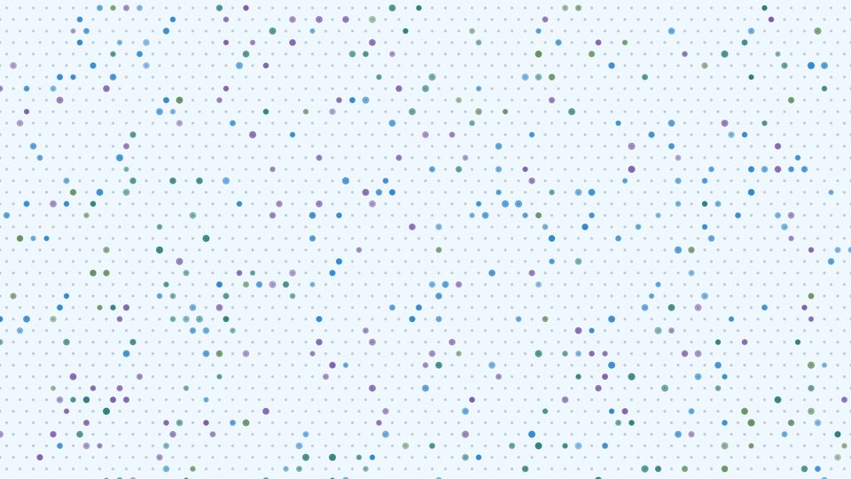
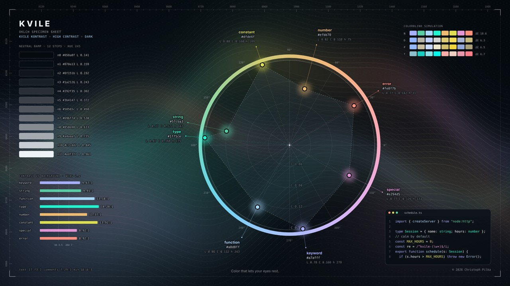
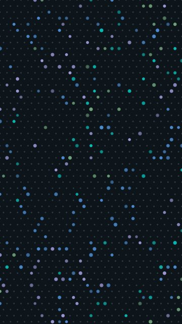
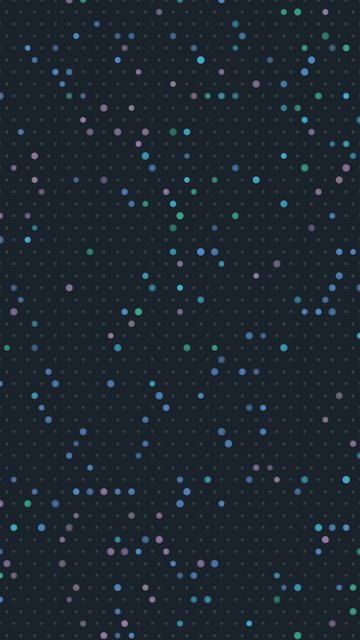
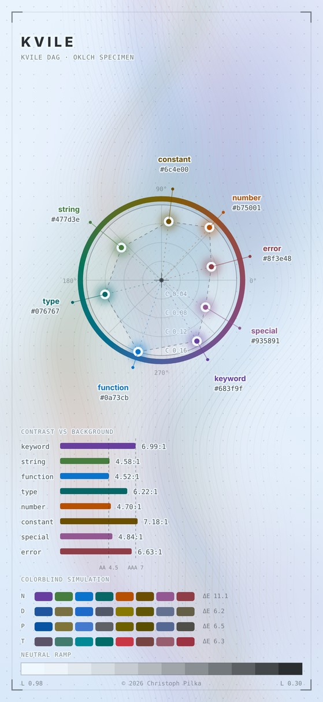
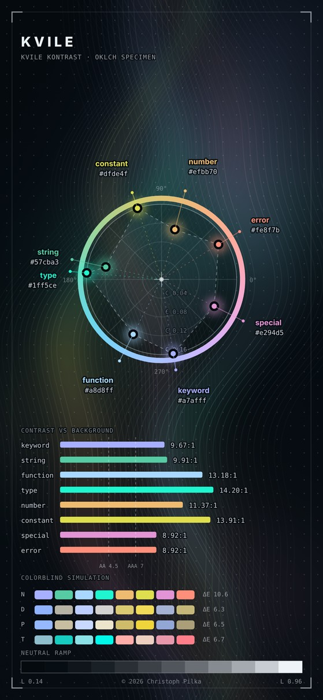

Color that lets your eyes rest.
One calm palette for the 52 apps you work in all day. Four variants, from night to high contrast.
New: a free e-book on color for screens →
Kvile NattSkumringDagKontrast (nightduskdayhigh contrast). The default. Deep blue-black with a soft, cool light. Made for long evenings.A little lighter than Natt. For rooms that are not quite dark.The light variant. Pale blue-white paper and ink that stays readable in daylight.The same palette pushed to the highest contrast, for bright rooms and tired eyes. Use the switch above: the whole page changes with it.
schedule.ts
1 2 3 4 5 6 7 8 9 10 11 12 13
import { createServer } from "node:http"; type Session = { name: string; hours: number }; // Calm by default, bright only where it matters. const MAX_HOURS = 8; const pattern = /^kvile-(\w+)$/i; export function schedule(s: Session): string { if (s.hours > MAX_HOURS) { throw new Error("Take a break: " + s.hours); } return s.name.replace(pattern, "$1"); }
mainTypeScriptJetBrains Mono 14
52 apps, one palette.
Editors, terminals, shells, command-line tools, browsers and more. Each preview below uses the real Kvile colors.
In the real apps
kitty
terminalXcode
editor49 more, as previews
Visual Studio Code
editorNeovim
editorClaude Code
cliGhostty
terminalAlacritty
terminalWezTerm
terminaliTerm2
terminalWindows Terminal
terminalTerminal (macOS)
terminalfish
shellzsh
shellDank Linux
desktopGoogle Chrome
browserHelium
browserBrave
browserMicrosoft Edge
browserVivaldi
browserGNOME Terminal
terminalrootshell
terminalKonsole
terminalXfce Terminal
terminalTilix
terminalTerminator
terminalPuTTY
terminalmintty
terminalHyper
terminalTermite
terminalGuake
terminalWarp
terminalVim
editorEmacs
editorSublime Text
editorJetBrains IDEs
editorNotepad++
editorgedit
editorHelix
editorZed
editorFirefox
browsertmux
cliZellij
cliYazi
cliStarship
clilazygit
clidircolors
cliXresources
cliSlack
appInsomnia
appObsidian
apphighlight.js
webEight accents, one job each.
Every color has a single meaning in every app, so your eyes learn it once. The accents are tuned to the same lightness and chroma, so none of them shouts.
keywords
#bdb1fe#ac8cb9#683f9f#a7afffstrings
#85c38f#3dc2a0#477d3e#57cba3functions
#57a3f7#5d9de5#0a73cb#a8d8fftypes
#01dfd5#46cef3#076767#1ff5cenumbers
#e29e2c#c88c3b#b75001#efbb70constants
#cdc94b#d0ba53#6c4e00#dfde4fregex
#ca87b4#f49bd0#935891#e294d5errors
#eb7b5f#f18c7e#8f3e48#fe8f7bChecked for contrast
Text and accents are measured against their background in every variant.
Checked for color vision
The accents stay distinct under deuteranopia, protanopia and tritanopia.
One source
All 52 apps are generated from a single palette file, so a change reaches every app at once.
Wallpapers to match.
Soft dots on a honeycomb, in each variant. Every theme comes in 14 sizes for desktop, phone and watch.








Free e-book · 60 pages
The science behind the calm.
Color theory for people who build on screens, and the reasoning behind every Kvile decision. Written for developers, with the real numbers and the code.
- How a screen makes color, and how eyes and brains read it
- Why HSL misleads and OKLCH works
- What contrast ratios measure, and why Kvile also sets a ceiling
- Color vision deficiency: simulation, distance checks and the tuning that keeps eight syntax colors apart
- Every decision and its limits, plus a checklist and working code
Read it in your browser, or take it along as PDF (0.7 MB) or EPUB (0.6 MB) for Apple Books, Kobo, Kindle (via Send to Kindle) and most readers. Free, no sign-up. Get Kvile early access
Early access, $39 once.
Kvile is in early access. The price goes up when every app has been checked in the real app. Early buyers keep every update.
Free
$0
- Kvile Natt for the most used apps: VS Code, Neovim, Terminal, iTerm2, Ghostty and Xcode
- The Natt wallpapers
Early access
$39 one time
- All four variants: Natt, Skumring, Dag and Kontrast
- All 52 apps, editors to command-line tools
- Wallpapers in 14 sizes for every variant
- Every future update, no subscription